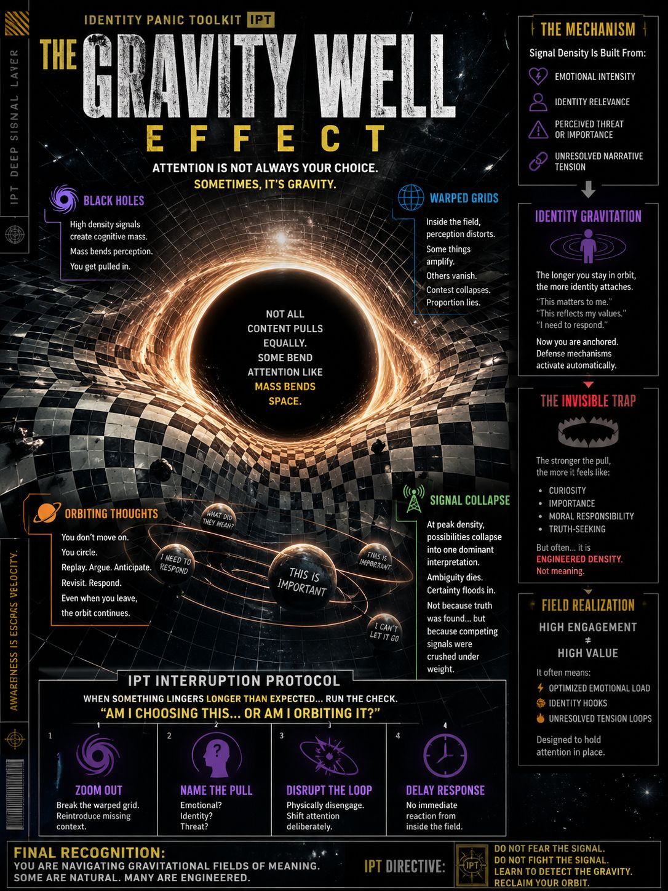

A Field Manual for Attention Capture & Cognitive Orbit
Deep Signal Layer
You are not always choosing what you focus on.
Sometimes…
Not all signals are equal.
Some carry weight.
That weight is built from:
When these stack…
And mass does what it always does:
Once inside a high-density signal field…
your perception is no longer flat.
It becomes:
where:
You are not seeing more clearly.
You are seeing through a bent lens.
Inside the field…
your mind begins to loop.
You don’t move on.
You circle.
Even when you leave the screen…
the orbit continues.
At peak density…
something critical happens:
Multiple possibilities narrow into one dominant interpretation.
Ambiguity disappears.
Certainty floods in.
Not because truth was found…
but because competing signals were crushed under weight.
The longer you stay in orbit…
the more identity begins to attach.
Now you are no longer observing.
You are anchored.
And once anchored…
defense mechanisms activate automatically.
The stronger the pull…
the more it feels like:
But often…
High engagement ≠ high value
It often means:
Designed to hold attention in place.
When something lingers longer than expected…
run the check:
If orbit is detected:
This restores cognitive gravity control.
The system does not need to control your beliefs.
It only needs to:
From there…
you will build the conclusion yourself.
You are not just navigating information.
You are navigating gravitational fields of meaning.
Some are natural.
Many are engineered.
Do not fear the signal.
Do not fight the signal.
Learn to detect:
Because once you see the gravity…
you are no longer trapped inside it.